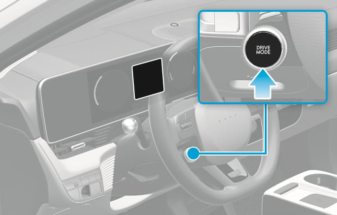

드라이브 모드 선택
운전자의 운전 성향과 도로 조건 및 교통 상황에 맞는 드라이브 모드를 선택할 수 있습니다.

2C_DriveMode
DRIVE MODE 버튼을 눌러 기본 드라이브 모드를 선택할 수 있습니다.
-
NORMAL: 가장 일반적인 주행 모드로, 도심, 일반 도로 및 고속도로 주행에 모두 적합합니다.
-
ECO: 급가속, 급감속 등 에너지 효율이 낮은 주행을 억제해 연비를 향상시킵니다.
-
SPORT: 빠르고 역동적인 주행에 적합한 반응성을 제공합니다.
-
MY DRIVE: 운전자가 선호하는 각 구성 요소에 대한 차량 성능을 자유롭게 조절하여 주행할 수 있습니다.
-
SNOW: 눈길 등 미끄러운 노면에서 구동력을 조절해 접지력을 높이고 미끄러짐을 억제해 안전한 주행을 돕습니다.
눈길이나 빙판길 주행 시 안전에 주의하십시오.
-
가속 페달을 천천히 밟아 부드럽게 출발하고 주행 중 충분한 차간거리를 유지하십시오.
-
급가속, 급제동, 과도한 스티어링 휠 조작을 피하십시오. 차량이 쉽게 미끄러질 수 있어 위험합니다.
-
ECO, SPORT 모드를 선택하면 클러스터에 해당 모드의 테마가 적용되고 표시등이 켜집니다.
-
ECO 모드 작동 중 시동을 껐다 걸면 ECO 모드가 유지됩니다.
-
SPORT, SNOW 모드 작동 중 시동을 껐다 걸면 NORMAL 모드로 변경됩니다.
-
ECO 모드의 연비 향상 효과는 운전 습관이나 교통 상황에 따라 다를 수 있습니다.
-
SPORT 모드 선택 시 연비가 감소할 수 있습니다.